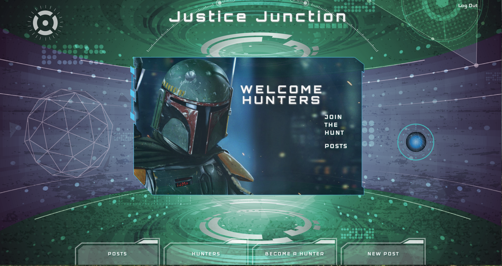
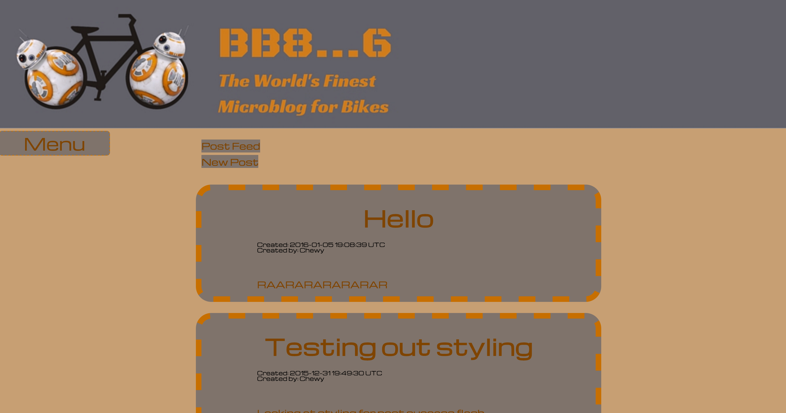
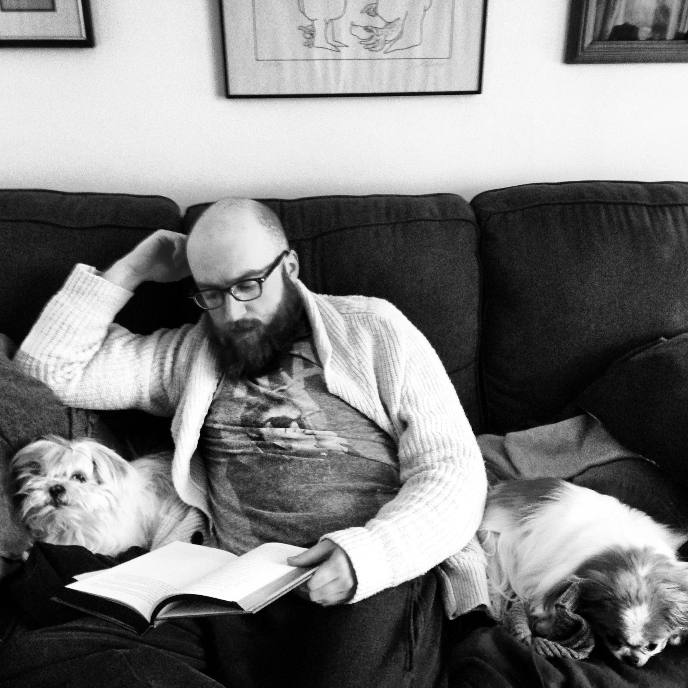
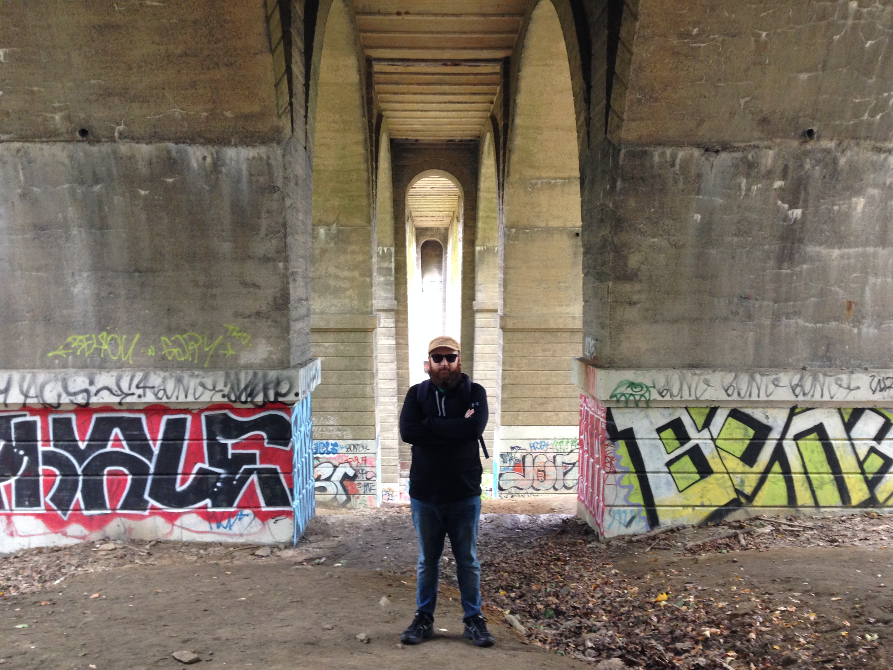

{Portfolio}


Justice Junction

BB86 Micro Blog
My name is Dylan Weinberger and I am begining my journey into web development. This page is dedicated to my portoflio for my web development, my past work, and my acting work.
I have recently moved to Philadelphia from Chicago. While in Chicago I worked at various internet start up companies including Groupon and GrubHub. At these companies I was able to work closely with members of the tech and development teams to help create a sustainable and friendly user enviornment. I hope to continue to hone my skills in development and be able to contribute to companies like those in the future.
I am originally from New York and I went to college at Indiana University in Bloomington. While at school I studied Political Science and Theatre and drama. I enjoyed the teamwork and friendships that I built through the theatre department. I learned how to speak well in public, work well with others, and act as a colloborator while building towards something bigger.
After Bloomington I came back home to New York where I worked in numerous off broadway shows and films. I also won several awards during this time for various comedy shows in the New York City Area. Additionally I appeared in several commercials during this time.
Opportunites then took me to Chicago where I continued my acting career as well as some exciting opportunites to help build some Chicago companies. I worked in several comedy theatres including the famous Second City Review. In this time I also filmed a short in Los Angeles that is being submitted to numerous top film festivals.
The rest of my time when I am not working on code I can be found at home with my girlfriend JJ and our two small dogs Kiwi (a Shih Tzu) and Jack Jack (a mini chihuahua/japanese chin)
